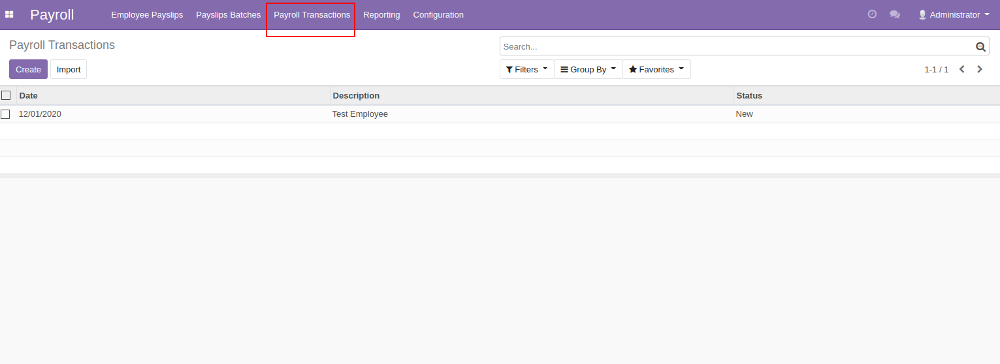
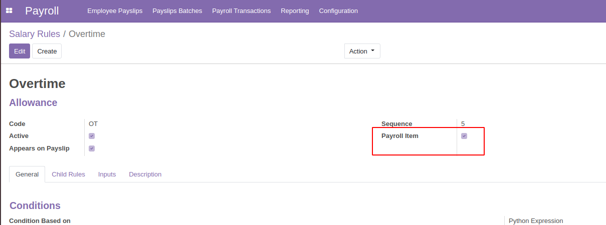
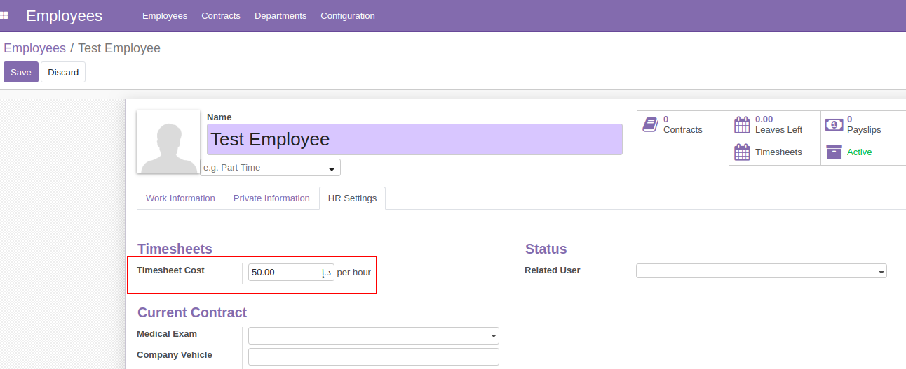
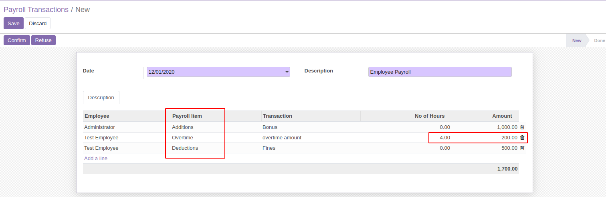
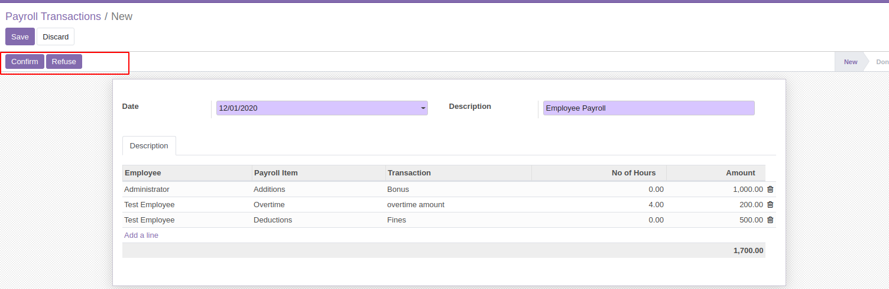
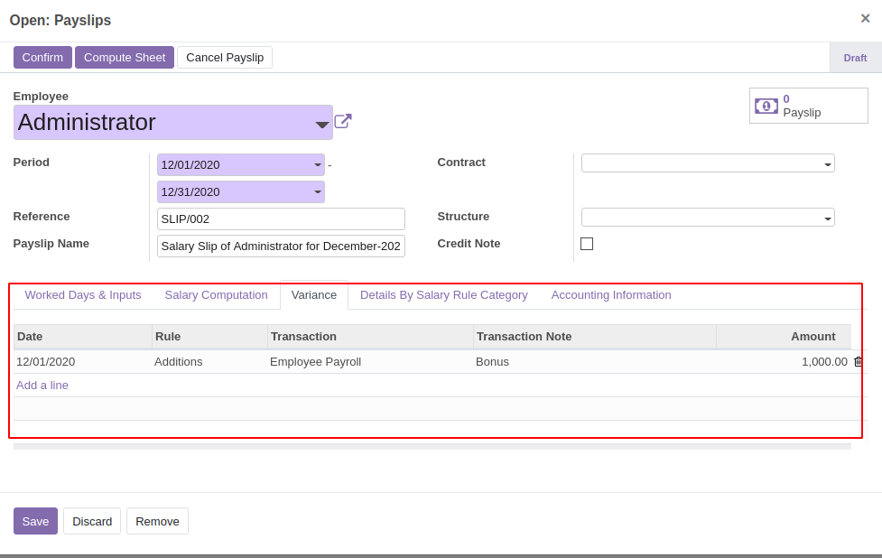
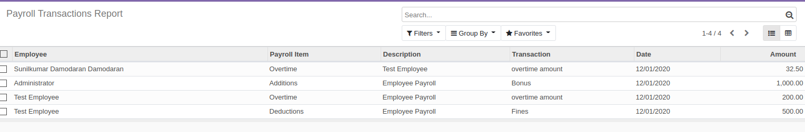

How to use this module

This module depends on base modules such as hr, hr_payroll, hr_timesheet.
After installing this module a separate menu named payroll transactions will be added in the payroll module.
1. Configuration
First of all we need to some configurations to make the module work properly.
Under configuration menu we have salary rules and under salary rule menu, create a new salary rule.

Here we can define all the additions , deductions, overtimes or any kind of payroll transactions individually that we are planning to include.
Make sure the Payroll Item is checked to make this salary rule visible in our payroll transactions.
You can define your own python expressions as it differs from organization to organization.
2. Time-sheet Cost:
Go to employees menu and under Hr settings tab, go to Time-sheet cost

Then to calculate overtime in payroll transactions , the time-sheet cost should be defined in the employee form.
The Overtime cost will be calculated on the basis of employee time-sheet cost * number of hours worked.
3. Calucations Of Payroll Transactions

a) Specify the date for which month you want this payroll transaction to be reflected.
b) Employee :More than one employee can be selected for the transactions.
c) Payroll Item : This payroll items are taken from salary rules where the Boolean field Payroll Item is checked.
d) Transaction : You provide the specifications, like what kind of additions or deductions you are planning to provide.
It can be bonus, fines , etc.
e) No of Hours: This is only applicable when there is an overtime for employee . After entering the Number of hours ,
amount will be automatically calculated along with time-sheet cost.
f) Amount : here you can specify the amount to be incremented or to be decreased from the payroll for the employees respectively.

After filling in the details, Hr manager can confirm the transactions and the state will be moved from New to done state.
If any rectification is required, Hr Manager can click on refuse to reset the form to draft for editing.
Here you can see the total of all the values at the bottom.
4. Employee Payslips:

As seen in the above image a separate tab is created as Variance to capture the additions and deductions that we had provided in the payroll transactions.
It has segregated individually for each employees respectively. All the values for additions and overtime will be added in payslips and all values for deductions will be deducted and net salary will be calculated accordingly.
5. Payroll Transaction Report:

Payroll transaction report is available under the reporting menu, to track and analyze the additions and deductions along with the amounts and dates.